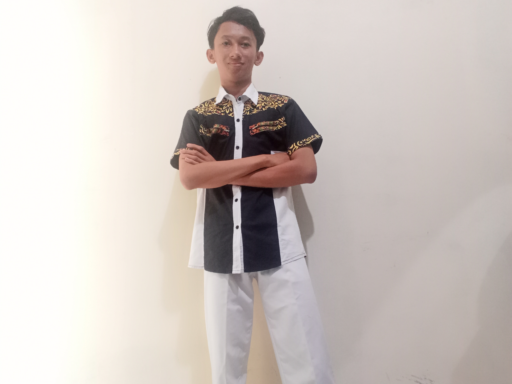

CURRICULUM VITAE (CV)

Link CV
DATA PRIBADI
- Nama : Muhammad Faqih
- Tempat, Tanggal Lahir : Tangerang, 22 November 2001
- Jenis Kelamin : Laki-laki
- Agama : Islam
- Tinggi Badan : 173 cm
- Berat Badan : 48 cm
- Alamat : Jl. Bonjol Gg. Mutiara II Rt.004 Rw.004 No.67 Kel. Pondok Karya Kec. Pondok Aren Tangerang Selatan Banten
- Handphone : 0895635325280
- Status : Belum Menikah
- E-mail : muhammadfaqih8899@gmail.com
DATA PENDIDIKAN
| Pendidikan |
Sekolah |
Kota |
Tahun |
| TK |
Islam Pelita Taqwa |
Tangerang |
2007 - 2008 |
| SDN |
05 Pesanggrahan |
Jakarta |
2008 - 2014 |
| SMP |
Darul Muttaqien |
Jakarta |
2014 - 2017 |
| SMK |
Media Informatika |
Jakarta |
2017 - 2020 |
| S1 |
Sistem Informasi, STT Terpadu Nurul Fikri |
Jakarta |
2020 - Sekarang |
KEMAMPUAN
- Microsoft Word
- Microsoft Exel
- Microsoft Power Point
- Adobe illustrator
- Adobe Photoshop
- Adobe Flash
- Adobe Premiere Pro
- Corel Draw
Link CV